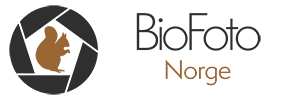

Meeting point
We meet all our guests at Joker Brårud (Vestsidavegen 885, 2162 Brårud) at the agreed time. From there, we guide you to the hide.

Brårudskjulet is a photography hide located in Brårud, Nes municipality, only 20 minutes from Gardermoen Airport. A calm and thoughtfully designed place for close encounters with forest birds of prey, without disturbing the animals.
From the hide
.jpg)
.jpg)
.jpg)
.jpg)
.jpg)
-2.jpg)
The hide
Brårudskjulet has 4 photography hatches, 4 sleeping places, comfortable chairs, and a basic toilet. It is heated with a gas heater, and there are facilities for boiling water using a camping stove. As tawny owls frequently visit the area, we have installed lights outside the hide, making evening and night photography possible. Fresh meat and seeds are provided daily to maintain activity. Solar panels light up the outdoor area, but there is no electricity in the hide.
We meet all our guests at Joker Brårud (Vestsidavegen 885, 2162 Brårud) at the agreed time. From there, we guide you to the hide.
Camera equipment, sleeping bag, warm clothing, indoor shoes, headlamp, food, drinks, and a urine bottle (for men). There are 2 gimbals available in the hide; otherwise, you must bring your own equipment.
Guests are not allowed to enter the feeding area, either upon arrival or departure, and must not stay outside the hide during daylight hours (zero tolerance, except in emergencies). Phones, iPads, and similar devices must be set to silent, and overall noise levels must be kept low to avoid disturbing the animals. Alcohol is permitted in moderate amounts, please be mindful of noise. Upon departure, the hide must be left in the same condition as when you arrived.
Get in touch
You can contact me directly by phone at +47 922 68 589 or by email at photo.espen@gmail.com. You can also use the form below.
